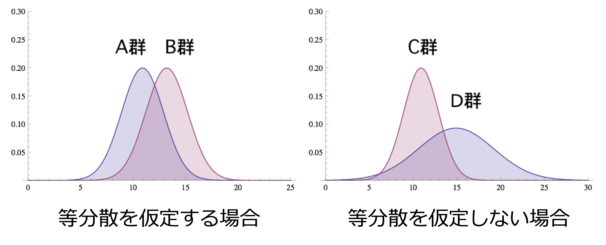

19 2群の比較
2つのグループの平均に差があるかどうかをどう判断するか？
・2群（2つのグループ）の平均値の差の検定
・対応がない標本と対応がある標本、等分散と不等分散（Welch の \(t\) 検定）、エクセルでの計算方法
19.1 2群の差のイメージ
前回は、1つの母平均が、ある値（1,000円）と違うかどうかを検定しました。今回は、2つのグループ（2群）の平均に差があるかどうかを検定します。
2群を比べるときは、2つのグループの分布の散らばり具合（分散）が同じかどうかによって、使う方法が変わります。
- 等分散を仮定する場合：A群とB群のように、2つの群の分散（山の広がり方）が等しいと考えられる場合です。
- 等分散を仮定しない場合：C群とD群のように、2つの群の分散が異なる場合です。

19.2 対応が「ない」標本と「ある」標本
2群の差を求め、その差が「あり得るか」「あり得ないか」を、検定統計量を計算し、その検定統計量が従う分布を使って判断します。このとき、2つの群のデータが「対応がない」か「対応がある」かによって、計算方法が変わります。
- 対応が「ない」標本
- 2つのそれぞれの条件において、測定した個体群が異なるデータのことです（違う人のデータ）。
- 例：10歳の小学生の身長をA、B、Cの3人で測定し、15歳の中学生の身長をD、E、Fの3人で測定したとき、得られたデータは対応のないデータです。
- 対応が「ある」標本
- ある条件を変えても、同じ個体群で繰り返し測定したデータのことです（同じ人のデータ）。反復測定したデータとも言います。
- 例：A、B、Cの3人について、10歳のときの身長と15歳のときの身長を測定したとき、得られたデータは対応のあるデータです。
19.3 仮説検定の手順（確認）
前回学んだ仮説検定の手順は、2群の比較でも同じです。
- 仮説を設定する。
- 自分が証明したいことの仮説を設定します。
- 有意水準（臨界値 critical value）を決める。
- どの程度の確からしさで結論を出すかを決めます。
- 検定統計量 \(t\) を求める（P値を計算する）。
- 仮説を基に、分布に従うべき値（検定統計量）を求めます。
- 検定統計量と臨界値を比較する（P値と有意水準を比較する）。
- 計算した検定統計量が、あり得ることか、あり得ないことかを検証します。
- 検定の結論を出す。
以下では、この手順に沿って説明します。
19.4 帰無仮説と対立仮説
手順1：仮説を設定する
- 帰無仮説（\(H_0\)）：2群（2つのグループ）の平均は同じである
- 対応がない場合
\[ H_0: \mu_1 = \mu_2 \quad \rightarrow \quad \mu_1 - \mu_2 = 0 \quad \text{（差がないという仮定）} \]
- 対応がある場合
\[ H_0: \mu_D = 0 \quad \text{（差の母平均が0という仮定）} \]
- 対立仮説（\(H_1\)）：2群（2つのグループ）の平均は同じではない
- 対応がない場合
\[ H_1: \mu_1 \neq \mu_2 \quad \rightarrow \quad \mu_1 - \mu_2 \neq 0 \quad \text{（差があるという仮定）} \]
- 対応がある場合
\[ H_1: \mu_D \neq 0 \quad \text{（差の母平均は0ではない）} \]
ここで、\(\mu_1\)、\(\mu_2\) はそれぞれの群の母平均、\(\mu_D\) は対応のあるデータの差 \(D\) の母平均を表します。
19.5 有意水準
手順2：有意水準（臨界値）を決める
前回と同じく、有意水準は検定の前に自分で決めます。以下の例では、最も多く用いられる有意水準5%（両側検定）とします。
19.6 対応がない場合（違う対象の場合）
手順3：検定統計量 \(t\) を求める
母分散が分かっている場合
標準化変量（\(z\)）を使い、正規分布 \(N(0, 1)\) で検定します（通常、この場合はほとんどありません）。
\[ z = \frac{(\bar{X}_1 - \bar{X}_2) - \color{#E36C09}{(\mu_1 - \mu_2)}}{\sqrt{\dfrac{\sigma_1^2}{n_1} + \dfrac{\sigma_2^2}{n_2}}} \]
2群の母分散が等しい（\(\sigma_1^2 = \sigma_2^2 = \sigma^2\)）場合は、分母が次のようにまとまります。
\[ z = \frac{(\bar{X}_1 - \bar{X}_2) - \color{#E36C09}{(\mu_1 - \mu_2)}}{\sigma\sqrt{\dfrac{1}{n_1} + \dfrac{1}{n_2}}} \]
母分散が分かっていない場合
- 2つの母集団の分散が等しいと仮定できる場合
- \(t\) 検定統計量を計算し、自由度 \(n_1 + n_2 - 2\) の \(t\) 分布で検定します（2標本 \(t\) 検定）。
\[ t = \frac{(\bar{X}_1 - \bar{X}_2) - \color{#E36C09}{(\mu_1 - \mu_2)}}{s\sqrt{\dfrac{1}{n_1} + \dfrac{1}{n_2}}} \]
- ただし、\(s^2\) は2つの群をまとめて計算した分散（プールされた分散、pooled variance）です。
\[ s^2 = \frac{1}{n_1 + n_2 - 2}\left\{\sum_{i=1}^{n_1}(X_{1i} - \bar{X}_1)^2 + \sum_{j=1}^{n_2}(X_{2j} - \bar{X}_2)^2\right\} = \frac{(n_1 - 1)s_1^2 + (n_2 - 1)s_2^2}{n_1 + n_2 - 2} \]
- 2つの母集団の分散が等しいと仮定できない場合
- Welch の \(t\) 検定（Welch の近似法）を行います（不均一分散の \(t\) 検定）。通常はこれを計算します。
\[ t = \frac{(\bar{X}_1 - \bar{X}_2) - \color{#E36C09}{(\mu_1 - \mu_2)}}{\sqrt{\dfrac{s_1^2}{n_1} + \dfrac{s_2^2}{n_2}}} \]
- この \(t\) が、次の自由度 \(\nu\)（ニュー）に最も近い整数の \(t\) 分布に、近似的に従います。
\[ \nu = \frac{\left(\dfrac{s_1^2}{n_1} + \dfrac{s_2^2}{n_2}\right)^2}{\dfrac{\left(\dfrac{s_1^2}{n_1}\right)^2}{n_1 - 1} + \dfrac{\left(\dfrac{s_2^2}{n_2}\right)^2}{n_2 - 1}} \]
どの式でも、オレンジの部分 \((\mu_1 - \mu_2)\) は、帰無仮説（\(\mu_1 - \mu_2 = 0\)）により0になります。
- 2つの母集団の分散が本当に等しいかどうかは、実際には分かりません。
- Welch の \(t\) 検定は、分散が等しい場合でも等しくない場合でも使えます。分散が等しい場合には、2標本 \(t\) 検定とほとんど同じ結果になります。
- 一方、分散が等しくないのに2標本 \(t\) 検定（等分散を仮定する方法）を使うと、結論を誤りやすくなります。
- 以前は「先に等分散かどうかの検定（F検定）を行い、その結果で方法を選ぶ」というやり方がよく紹介されていましたが、現在では、最初から Welch の \(t\) 検定を使う方法が勧められることが多くなっています。
19.7 対応がある場合（同じ対象の場合）
手順3：検定統計量 \(t\) を求める
対応がある場合は、「対応のあるデータの差」を用いて検定を行います。差を一つの標本と考え、これを検定します。つまり、前回学んだ「1つの母平均の検定」と同じ形になります。
\[ t = \frac{\bar{D} - \color{#E36C09}{\mu_D}}{\frac{s}{\sqrt{n}}} \]
ここで、\(\bar{D}\) は差の標本平均、\(s\) は差の標本（不偏）標準偏差、\(n\) はペアの数です。オレンジの部分 \(\mu_D\) は、帰無仮説（\(\mu_D = 0\)）により0になります。
例：補習クラスを実施した場合の比較
| 生徒 | 補習クラス前 | 補習クラス後 | 差 (\(D\)) |
|---|---|---|---|
| A | 30 | 40 | 10 |
| B | 60 | 60 | 0 |
| C | 45 | 50 | 5 |
| D | 50 | 49 | −1 |
| E | 65 | 66 | 1 |
| 合計 | 250 | 265 | 15 |
| 平均 | 50 | 53 | 3 |
右の列の「差」を一つの標本と考えて検定を行います。
- 差の標本平均：\(\bar{D} = 3\)
- 差の標本（不偏）標準偏差：\(s = 4.528\)
差の母平均 \(\mu_D\) と標本（不偏）標準偏差 \(s\) を使って標準化すると、自由度 \(n - 1 = 5 - 1 = 4\) の \(t\) 分布に従います。
19.8 帰無仮説の下で計算する検定統計量
帰無仮説により、オレンジの部分は0となって式から消えます。したがって、実際に計算する検定統計量は次のようになります。
対応がない場合（母分散が分からない場合）
- 2つの母集団の分散が等しいと仮定できる場合
\[ t = \frac{(\bar{X}_1 - \bar{X}_2) - \color{#E36C09}{(\mu_1 - \mu_2)}}{s\sqrt{\dfrac{1}{n_1} + \dfrac{1}{n_2}}} = \frac{\bar{X}_1 - \bar{X}_2}{s\sqrt{\dfrac{1}{n_1} + \dfrac{1}{n_2}}} \]
- 2つの母集団の分散が等しいと仮定できない場合（Welch の \(t\) 検定）
\[ t = \frac{(\bar{X}_1 - \bar{X}_2) - \color{#E36C09}{(\mu_1 - \mu_2)}}{\sqrt{\dfrac{s_1^2}{n_1} + \dfrac{s_2^2}{n_2}}} = \frac{\bar{X}_1 - \bar{X}_2}{\sqrt{\dfrac{s_1^2}{n_1} + \dfrac{s_2^2}{n_2}}} \]
対応がある場合
\[ t = \frac{\bar{D} - \color{#E36C09}{\mu_D}}{\frac{s}{\sqrt{n}}} = \frac{\bar{D}}{\frac{s}{\sqrt{n}}} \]
19.9 具体的な計算（対応がない場合）
手順4：検定統計量と臨界値を比較する 手順5：検定の結論を出す
まず、補習クラスの例の10個の点数（上の表と同じ点数）について、「補習クラス前」の5人と「補習クラス後」の5人が、違う生徒だったとします。この場合は、対応がない場合の方法で、2つの群の平均に差があるかどうかを検定します。
| 補習クラス前（群1） | 補習クラス後（群2） | |
|---|---|---|
| 点数 | 30, 60, 45, 50, 65 | 40, 60, 50, 49, 66 |
| 標本平均 | \(\bar{X}_1 = 50\) | \(\bar{X}_2 = 53\) |
| 標本（不偏）分散 | \(s_1^2 = 187.5\) | \(s_2^2 = 103\) |
| 標本サイズ | \(n_1 = 5\) | \(n_2 = 5\) |
- \(H_0: \mu_1 = \mu_2\)（補習クラス前と後の生徒で、点数の平均は同じ）
- \(H_1: \mu_1 \neq \mu_2\)（補習クラス前と後の生徒で、点数の平均は同じではない）
- 有意水準：5%（両側検定）
検定統計量（Welch の \(t\) 検定）
\[ t = \frac{\bar{X}_1 - \bar{X}_2}{\sqrt{\dfrac{s_1^2}{n_1} + \dfrac{s_2^2}{n_2}}} = \frac{50 - 53}{\sqrt{\dfrac{187.5}{5} + \dfrac{103}{5}}} = \frac{-3}{\sqrt{58.1}} = \frac{-3}{7.622} = -0.394 \]
臨界値とP値
- 自由度：\(\nu = 7.38\) なので、最も近い整数の7を使います。
- 自由度7、有意水準5%（両側）の臨界値：2.365
- P値（両側）：0.706
比較と結論
- \(|t| = 0.394\) は臨界値2.365より小さく（棄却域に入らず）、P値0.706は有意水準0.05より大きくなります。
- したがって、帰無仮説は棄却されません。
- 結論：「補習クラス前と後の生徒で、点数の平均に差があるとはいえない（有意水準5%）」となります。
なお、等分散を仮定する2標本 \(t\) 検定で計算しても、\(t = -0.394\)（自由度8、P値0.704）となり、ほとんど同じ結果になります。
19.10 具体的な計算（対応がある場合）
手順4：検定統計量と臨界値を比較する 手順5：検定の結論を出す
では、実は、この10個の点数が、同じ5人（生徒A〜E）の補習クラス前と後の点数だったとします。この場合はデータに対応があるので、前後の差 \(D\) を使って検定します。
- \(H_0: \mu_D = 0\)（補習の前後で点数の平均は変わらない）
- \(H_1: \mu_D \neq 0\)（補習の前後で点数の平均は変わる）
- 有意水準：5%（両側検定）
検定統計量
\[ t = \frac{\bar{D}}{\frac{s}{\sqrt{n}}} = \frac{3}{\frac{4.528}{\sqrt{5}}} = \frac{3}{2.025} = 1.482 \]
臨界値とP値
- 自由度4、有意水準5%（両側）の臨界値：2.776
- P値（両側）：0.213
比較と結論
- \(t = 1.482\) は臨界値2.776より小さく（棄却域に入らず）、P値0.213は有意水準0.05より大きくなります。
- したがって、帰無仮説は棄却されません。
- 結論：「補習の前後で点数の平均に差があるとはいえない（有意水準5%）」となります。
- 平均点は50点から53点に上がっていますが、生徒によって、10点上がった人も、1点下がった人もいて、差のばらつき（標準偏差4.528）が大きくなっています。
- さらに、生徒が5人しかいないので、「たまたま3点上がった」可能性を否定できません。
- 帰無仮説が棄却されないことは、「補習に効果がない」ことを示したわけではありません。「この5人のデータからは、効果があったとはいえない」という意味です。生徒の数を増やせば、結論が変わる可能性もあります。
| 方法 | \(t\) 値の大きさ | P値 |
|---|---|---|
| 対応がない場合（Welch） | 0.394 | 0.706 |
| 対応がある場合（差を検定） | 1.482 | 0.213 |
- 同じ10個の点数でも、対応がある場合の方が \(t\) 値が大きく（P値が小さく）なっています。
- 対応がない場合は、「もともと点数の高い生徒と低い生徒がいる」という生徒の間のばらつき（分散187.5と103）が、そのまま分母に入ります。
- 対応がある場合は、同じ生徒の前後の差を取るので、生徒の間のばらつきが打ち消され、「補習による変化」だけを取り出して比べることができます。
- そのため、データに対応がある場合は、必ず対応がある場合の方法を使います。どちらの方法を使うかは、データの取り方で決まります。
19.11 エクセルでの計算方法
T.TEST 関数でP値を直接求める方法
T.TEST 関数を使うと、元のデータから直接P値が求められます。
=T.TEST(配列1, 配列2, 尾部, 検定の種類)- 尾部：両側検定は
2、片側検定は1を指定します。 - 検定の種類：
1：対応がある場合（一対の標本）2：対応がない場合で、等分散を仮定する場合（2標本 \(t\) 検定）3：対応がない場合で、等分散を仮定しない場合（Welch の \(t\) 検定）
| 方法 | エクセルの式 | P値 |
|---|---|---|
| 対応がない場合（Welch） | =T.TEST(B2:B6, C2:C6, 2, 3) |
約0.705 |
| 対応がない場合 （等分散を仮定） |
=T.TEST(B2:B6, C2:C6, 2, 2) |
0.704 |
| 対応がある場合 | =T.TEST(B2:B6, C2:C6, 2, 1) |
0.213 |
T.TEST 関数はP値だけを返し、\(t\) 値は表示されません。\(t\) 値も確認したい場合は、1つずつ計算するか、次の分析ツールを使います。なお、Welch の \(t\) 検定のP値は、自由度を整数に丸めるかどうかで、小数点以下の桁がわずかに異なることがあります。
分析ツールを使う方法
「データ」→「データ分析」から、次の3種類の \(t\) 検定を選べます。
- 対応がある場合：「t 検定: 一対の標本による平均の検定」
- 対応がない場合で、等分散を仮定する場合：「t 検定: 等分散を仮定した 2 標本による検定」
- 対応がない場合で、等分散を仮定しない場合：「t 検定: 分散が等しくないと仮定した 2 標本による検定」
変数1の入力範囲と変数2の入力範囲にそれぞれのデータを指定し、「仮説平均との差異」に 0、「α」に 0.05 を入力すると、\(t\) 値（「t」）、P値（「P(T<=t) 両側」）、臨界値（「t 境界値 両側」）がまとめて出力されます。